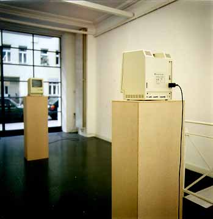

Galerie Anselm Dreher / Adib Fricke

Adib Fricke, "Das Lächeln des Leonardo da Vinci
- Ein Zufallsgenerator", 1991
Installation für zwei Rechner "Apple-Macintosh",
1/3
zur Ausstellung "The Artist's Beautiful Language",
1995 /96, Sammlung Nationalgalerie SMPK Berlin